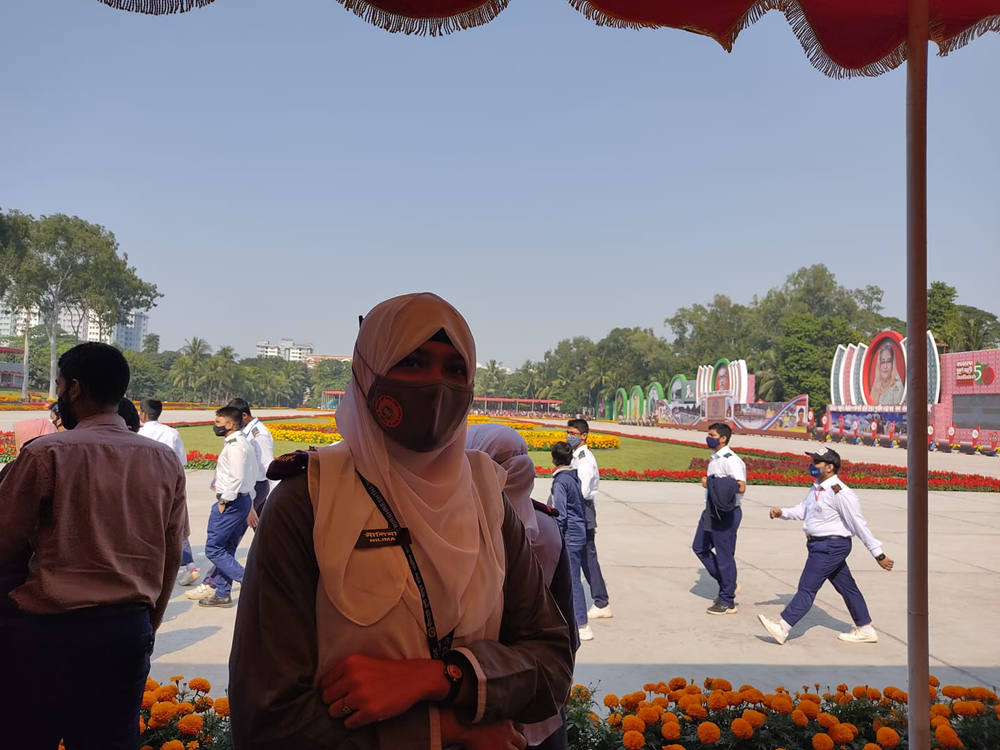

HELLO EVERYONE,
MY NAME IS
NILIMA RAHMAN LABONNO
About Me
I am a creative student at Universiti Teknologi Malaysia (UTM) specializing in Graphics and Multimedia Software. I am passionate about digital storytelling and creating impactful visual experiences.
Core: Education & Skills
Education: Bachelor of Computer Science (Graphics and Multimedia Software), UTM.
Skills: Multimedia Design, UI/UX, Graphics Software Development.
Recommended: Courses
• Graphic Design Masterclass - Online Certification.
• Adobe Certified Professional - Digital Illustration.
Additional: Honors, Awards & Projects
• Award: Academic Honor Award from BMAPC.
• Project: Branding and Visual Identity Design.
• Project: 2D Animation Assignment.
Academic Assignments & Reflections
1.1 Reflection on Industrial Visit 1 (UTM Open Day at UTM Digital)
Watch the Video:
Watch on YouTube1. What I have gained:
"I attended the UTM Open Day held at UTM Digital, which served as my first Industrial Visit. It was a great opportunity where various companies reviewed their latest products and shared how technology is shaping the future. I gained a clear understanding of how UTM Smart services facilitate our campus life."


1.2 Reflection for Poster: PPG Industrial Talk 1
.jpeg)
Reflection: "While creating this poster, I dived deep into how a global leader uses data to drive its business. I gained detailed knowledge about Data Analytics COE and PPG's Cloud-Only infrastructure strategy."
1.3 Reflection for Industrial Talk 2: Academic Writing
2. Reflection for PC Assemble Report
3. Reflection for Design Thinking (BuddyUp App)
Reflection: "In this project, I worked with my team to design BuddyUp. I gained a deep understanding of the 'Design Thinking' process by identifying the gap in academic support for first-year students. The prototype video demonstrates the core user flow and features we designed."
4. Reflection for Assignment 4
Reflection: "Through Assignment 4, I further refined my technical documentation and analytical skills. This task allowed me to apply core concepts into a comprehensive final report."